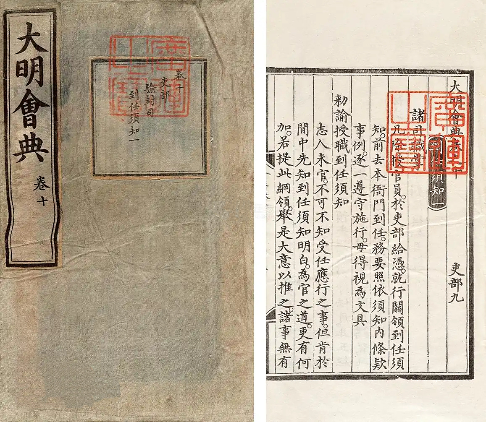
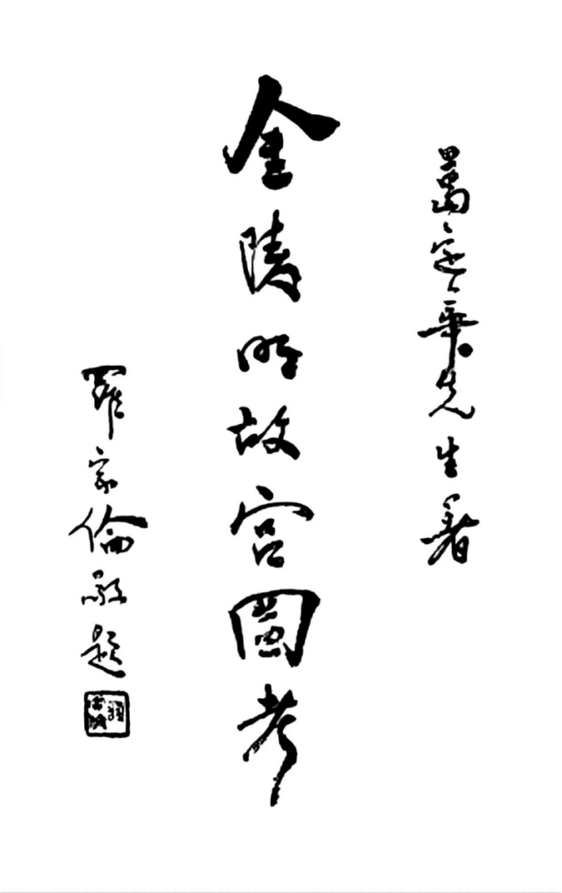
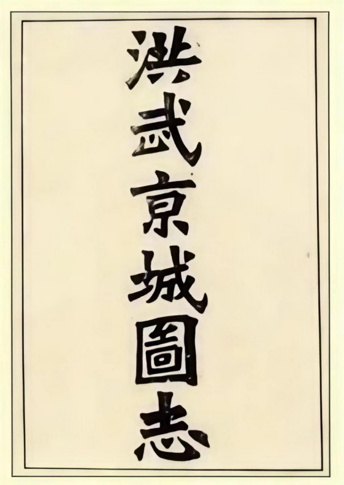
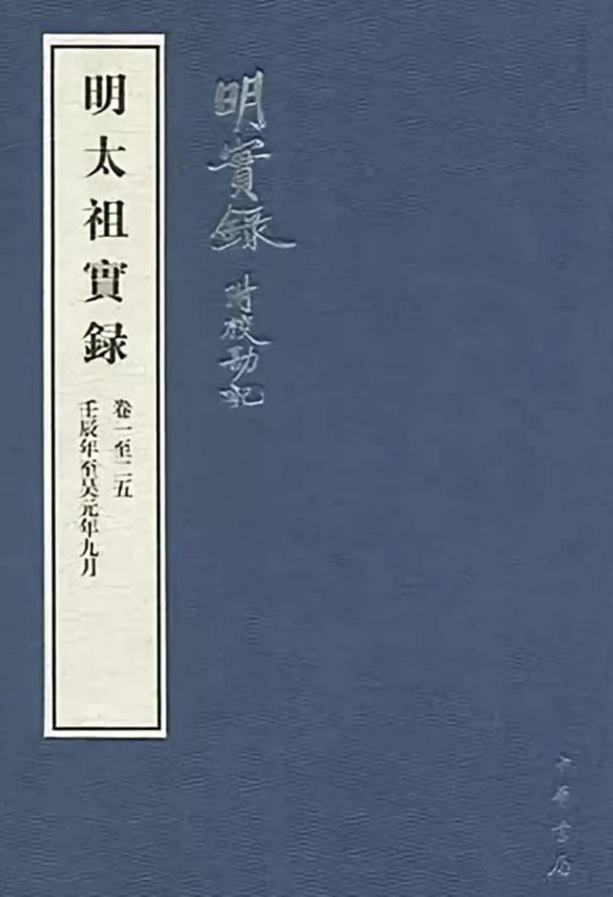
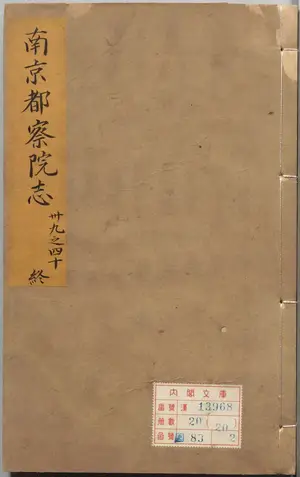

点击右侧书名切换书籍
点击页码进行翻面

大明会典卷之一百八十七
李东阳等奉敕撰/申时行等奉敕重修
凡京师城垣，洪武二十六年定：皇城、京城墙垣，遇有损坏，即便丈量明白，见数计料。所有砖灰，行下聚宝山、黑窑等处关支。其合用人工，咨呈都府，行移留守五卫，差拨军士修理。若在外藩镇、府州城隍，但有损坏，系干紧要去处者，随即度量彼处军民工料多少，入奏修理。如系腹里去处，于农隙之时兴工。天顺六年，今后军都督府并守门官军巡视，如有损坏低洼，该门官军随即填补修理。
皇城。皇城起大明门、长安左右门，历东安、西安、北安三门，周围三千二百二十五丈九尺四寸。内紫禁城起午门，历东华、西华、玄武三门，南北各二百三十六丈二尺，东西各三百二丈九尺五寸。城高三丈，𣐟口四尺五寸五分，基厚二丈五尺，顶收二丈一尺二寸五分。
京城。国初定都南京，城周围九十六里，门十三：曰正阳、通济、聚宝、三山、石城、清凉、定淮、仪凤、钟阜、金川、神策、太平、朝阳，后塞钟阜、仪凤二门。外城周围一百八十里，门十六：曰麒麟、仙鹤、姚坊、高桥、沧波、双桥、夹冈、上方、凤台、大驯象、大安德、小安德、江东、佛宁、上元、观音。
永乐中，定都北京，建筑京城，周围四十里，为九门，南曰丽正、文明、顺成，东曰齐化、东直，西曰平则、西直，北曰安定、德胜。正统初，更名丽正为正阳，文明为崇文，顺成为宣武，齐化为朝阳，平则为阜成，余四门仍旧。城南一面长一千二百九十五丈九尺三寸，北二千二百三十二丈四尺五寸，东一千七百八十六丈九尺三寸，西一千五百六十四丈五尺二寸，高三丈五尺五寸，垛口五尺八寸，基厚六丈二尺，顶收五丈。
嘉靖二十三年，筑重城，包京城南面，转抱东西角楼，止长二十八里，为七门，南曰永定、左安、右安，东曰广渠、东便，西曰广宁、西便。城南一面长二千四百五十四丈四尺七寸，东一千八十五丈一尺，西一千九十三丈
凡皇城红铺，弘治六年奏准：巡视城垣委官时常点视比较，应修理者，随即具呈修理。其直宿官军不行用心看守，致有损失，应参究者，径自参究。嘉靖三十一年题准：兵部点军司官、工部街道官、各城巡视御史，俱要不时巡阅查点，各该官军严督看守。遇有遗失损坏，轻则责治，重则参提，俱责修赔。仍行锦衣卫、街道官一体巡缉禁治。
凡城垣禁约，成化十年，令都城外四围沿河居住军民人等，越入墙垣，偷鱼割草，窃取砖石等项，轻则量情惩治，重则参奏拏问，枷号示众。若该城徇情纵容不理，及四邻知而不首者，皆治以罪。其守门官军亦不许于城外河边栽种牧放，因而引惹外人入内作践。违者一体治罪。
凡各处城楼窝铺，洪武元年，令：腹里有军城池，每二十丈置一铺，边境城每十丈一铺。其总兵官随机应变增置者，不在此限。无军处所，有司自行设置，常加点视，毋致疏漏损坏。提调官任满得代，相沿交割，违者治罪。
坛场。
凡修理坛场，洪武二十六年定。天地坛场若有损坏去处，合修理者，督工计料修整；合漆饰者，行下营缮所差工漆饰。所用木石、砖灰、颜料等项，行下抽分竹木局等衙门照数关支。
嘉靖十二年题准：祈榖坛并牺牲所，每年太常寺呈工部支取石灰一万斤，工食银二十两，给付各该人员修饰。
万历四年题准：先农坛每年春秋二季，行太常寺委官摘拨坛户，将瓦上砖地内草木芟除；墙垣，行管理重城司官巡视。如有剥裂处所，量取砖石，雇募匠作修补。
圜丘坛，吴元年，建圜丘于京城之南。洪武十一年，即其地建大祀殿，合祀天地，是为天地坛。嘉靖九年，复初制，仍为圜丘，在正阳门南。圜丘三成，坛一成，面径五丈九尺，高九尺；二成面径九丈，高八尺一寸；三成面径十二丈，高八尺一寸。各成面砖用一九七五阳数，及周围拦板柱子，皆青色琉璃，四出陛各九级，白石为之。内𭏸圆墙九十七丈七尺五寸，高八尺一寸，厚二尺七寸五分。灵星石门六，正南三，东西北各一。外𭏸方墙二百四丈八尺五寸，高九尺一寸，厚二尺七寸。
如前。高用周尺，余今尺，下同。又外围方墙为门四：南曰昭亨，东曰泰元，西曰广利，北曰成贞。
方泽坛，吴元年，建方丘于钟山之北。洪武十一年，改建天地坛，遂废。嘉靖九年，复初制为方泽，在安定门外。方泽二成，坛一成，面方六丈，高六尺；二成面方十丈六寸，高六尺。各成面砖用六八阴数，皆黄色琉璃，青白石包砌，四出陛各八级。周围水渠一道，长四十九丈四尺四寸，深八尺六寸，阔六尺。内𭏸方墙二十七丈二尺，高六尺，厚二尺。灵星门六，正北三，东西南各一。外𭏸方墙四十二丈，高八尺，厚二尺四寸。灵星门如前。又外围方墙二重，内重北门三，东西南门各一，最外惟西向三门。又西有石坊曰泰折街。
朝日坛，嘉靖九年建，在朝阳门外。坛方广五丈，高五尺九寸。坛面砖青色琉璃，四出陛九级。圆𭏸墙七十五丈，高八尺一寸，厚二尺三寸。灵星门六，正西三，南东北各一。外围墙前方后圆，西北各三门。墙之西北有石坊曰礼神街。
夕月坛，嘉靖九年建，在阜城门外。坛方广四丈，高四尺六寸。坛面砖白色琉璃，四出陛六级。方𭏸墙二十四丈，高八尺，厚二尺二寸八分。灵星门六，正东三，南北西各一。外围方墙，东北各三门。墙之东北有石坊，亦曰礼神街。
雩坛，嘉靖中建，在泰元门外。圆广五丈，高七尺五寸，四出陛各九级。内圆墙径二十七丈，高四尺九寸五分，厚二尺五寸。
灵星门六，正南三，东西北各一。外围方墙四十五丈，高八尺一寸，厚二尺七寸。正南三门曰崇雩门，共为一区，在南郊之西。外围墙东西面阔八十一丈五尺，南北进深五十六丈九尺，高九尺，厚三尺。
神祇坛，国初建山川坛于天地坛之西。永乐中，北京山川坛成。嘉靖十一年，即其地为天神地祇坛。神坛方广五丈，高四尺五寸五分，四出陛各九级。𭏸墙方二十四丈，高五尺五寸，厚二尺五寸。灵星门六，正南三，东西北各一。内设云形青白石龛四，于坛北，各高九尺二寸五分。
祇坛面阔十丈，进深六丈，高四尺，四出陛各六级。墙方二十四丈，高五尺五寸，厚二尺四寸。灵星门亦如神坛，内设青白石龛，
山形三，水形二，于坛北，先拟设于坛南，北向，后改。各高八尺二寸。左从位山水形各一于坛东，右从位山水形各一于坛西，各高七尺六寸。
先农坛，洪武二年，建先农坛于山川坛西南。永乐中，建坛如南京。坛在神祇坛后，石包砖砌，方广四丈七尺，高四尺五寸，四出陛。坛东为观耕台，用木，方五丈，高五尺，南东西三出陛。
先蚕坛，嘉靖中，始建在安定门外，后改于西苑。坛石包砖砌，方广二丈六尺，高二尺六寸，四出陛。坛东为采桑台，用砖石，方一丈四寸，高一尺四寸，南东西三出陛。
太社稷坛，吴元年，建社稷坛于宫城之西南，北向，异坛同𭏸。洪武十年，改建，同坛
同𭏸。永乐中，建坛如南京，在午门右。同坛同𭏸坛二成，上成方五丈，次成方五丈三尺，高五尺，四出陛，用五色土随方筑之。𭏸垣四面开灵星门，垣之色亦各如其方。

葛定华/ 民国22（1933）
第一节 故宫遗迹
明太祖以贫民举义于濠上，统一中原，奠都金陵，营宫殿、社稷于钟山之阳，历清代而毁。青溪之东，犹存遗迹，世所称明故宫是也。民国八年春，尝游金陵，访问故宫遗址，居民引指道路，极目遥瞻，信如于武陵所叹：“莫问古宫名，古宫空古城。”(于武陵《长春宫诗》)自大中桥而东，北行里许，翘首东望，瓦砾遍地，处处蓬蒿，不觉“古城苍莽饶荆棘”“驱马荒城愁杀人”之感，油然动于中也。
而茅茨错落，居民每拔除瓦石，以事耕植，禾黍离离，鲍溶所咏“坏宫芳草满人家”，此景似之。清将军署，在东厂街之东，辛亥之役，已全毁，惟门阙及照墙尚存。其东午门，旁连宫墙。入午门而北，经五龙桥，有古物陈列所，为革命后新建者。其时只周览古物陈列所古物而返，于故宫遗迹，未及考访也。
自国府奠都金陵，数载经营，景物焕新，大有“但见雄都新朝市，轩车照耀歌钟起”之概；谁复忆“古殿吴花草，深宫晋绮罗”者！今年春，来京师，于授课之余，率诸生作实地之研究，重访故宫遗迹，道经西华门，而中山东路，横越故宫旧址，东出朝阳。
昔年瓦砾累累者，今则辟为广场，或犁为田畴，又与数载前大异。盖近年城内居民骤增，地利多辟故也。旧存宫墙，已拆毁无遗，惟跋陟其间，故宫陈迹，犹有可考者。
自天津桥而东，为明时西华门大街，桥东二十余丈处，有城门三阙，俗称为西华门旧址。门西向，城楼已毁，毗连之城垣，亦无遗存。自大街直东里许，又有城门一座，孤立西向，一如西华门，俗称为西长安门。复东半里余，有石桥相并者五，俗称内五龙桥，桥跨御河。桥南三丈为午朝门，五门向南，其外有左右环伸之城，向南成“□”形，是即两观也。今门楼已废，门阙依然，而左右环伸之观，亦被
拆毁，惟遗土石垒然，高丈许，石基尚无恙，量其基南北各长约六丈，北端接门楼，厚约三丈。自午门而南，有大道直达洪武门，道均为大石砌成，即旧所称御道也。午门南里许，又有五石桥并峙，如内五龙桥然，是为外五龙桥。其南二里，即为明时之正阳门。自午门至正阳门，御道两旁，尽为田舍，居民多以宫墙残砖，构为庐居。明代建筑，已荡然不可考见矣。自内五龙桥而东，半里余，复有一城门孤峙，与西长安门相对，即俗称东长安门也。其门东距朝阳门约一里。自内五龙桥而北，为古物陈列所，革命后，因明宫遗址而建。所之北，为今中山东路。自所而北，黄土一片，其中央略高处，当为三殿之基。
由南而北，有方石百十，序列地面，石广如方桌④，厚亦如之，多倾倚于土中。近有击碎以售者，并掘取其基之填石，基石深及丈，广亦及寻，盖为宫殿之正殿柱础也。据此，犹可考见宫殿层列之地位，惟其阶石无有存者，盖为市民窃取以尽也。南京旧图载宫之北，为后宰门，更北为北安门，均无遗存，但见其地瓦砾遍地耳。故宫墙南自午门，东、西自东、西长安门，北至后宰门，成方形，东西长一里半，南北稍长。民国初年，尚有残存之砖墙，今已拆尽，惟土阜绵亘，犹可识之。观其城阙及残存土阜，其墙当甚坚厚，即所谓紫禁城也。墙内明时称大内，其西北隅有土阜，大数亩，相传为妆台旧址，今有民家三五，结茅
其上。旧时土阜之太湖石，亦尽为人取去。玉河一称御河，绕于宫墙之外，为紫禁城之护城河，发源于半山寺后之前湖。前湖水经外城墙入城，每至春夏两季，流如潮涌，澎湃之声，闻达数里。流经半山亭下，至紫禁城东墙入御城河，南流经东长安门前，分为二：一南行经九板桥而西；一北行折入宫墙，西经内五龙桥，至西长安门，折而北，经妆台西北，出宫墙，与墙外之护城河相接，循护城河而南，经西长安门前，复南约一里半，经小五马桥，与东来之河合。其东来之水，源于外城墙之铜心管桥，桥西数十丈处，为青龙桥，更西即与玉河南行之水，合而西流，即为外五龙桥。更西半里余，为白虎桥，桥西与西长安门南来之流
相接。更西，经五马桥，入青溪正流(本节所称长安、西华、后宰诸门之名，均依俗称，非明时本名也)。

王俊华（明）
天地定位，山川启奥区之秘；宅中图治，卜筑显王畿之尊。河岳壮金汤之固，邦畿凝带砺之祥。况乎神皋圣壤，其所蓄也深，则其待于今也大。圣人应期启运，故天发其藏，地辟其会，而体国经野之制，固有以轶丰镐而跨两京者矣。
金陵控扼吴楚，天堑缭其西北，连山拱其东南，而龙蟠虎踞之势，昔人之言，盖不诬也。孙吴始创居之，六朝、南唐，虽代有其地，然而疆域之广，未极其盛者，意者天之所兆，有资于今日，以启一代王业之隆也欤？
岁壬辰、癸巳间，天厌元德，群雄并起。皇上龙兴淮甸，天戈南指，吴越首入版图。乃默与神谋，定鼎定都，于是辨方正位，立洪基，造丕图，而郏鄏之鼎以定。山若增而高，水若增而深，回抱环合，献奇贡异，而荣光佳气，与斗牛星纪并丽乎太微帝车之间，何其伟耶！
树本既固，乃命将出师，披山东，下河南，拔潼关而守之，遂北摧幽、燕，西临汾、晋，入陕右，尽有秦、陇之地。凡元之余烬，皆来请命于庭。故交广之墟，羌僰之聚，椎结卉裳之区，山梯海航，咸奉琛致贡，方轨毕至。而京师之壮，增饰崇丽，轮蹄交集，丝管喧竞，岁时士女，填郭隘郛，其宏盛气象，度
越今古，岂区区偏方闰位之可媲拟哉？
虽然，皇上经营缔构，盖已极其盛矣，然而遐方远裔，未睹其胜，无以知圣谟经纶之至。爰诏礼曹，命画者貌以为图，毫分缕析：街衢巷隧之列，桥道亭台之施，名贤祠屋之严邃，王侯第宅之华好，星陈棋布。地有显晦而沿革不同，名有古今而表著无异。凡所以大一统之规模者，可以一览而尽得之矣。
图成，并锓诸梓，且摹之以徧示四方，使天下之人足迹未尝一至者，皆得睹其胜概，亦若闻和銮之音，望属车之尘于钩陈豹尾间也。大矣哉！皇上之英谋伟略，何其深且至耶！
臣俊华际明时，庀职春坊，谨拜手稽首而言曰：自古圣帝明王之有天下也，若夏、殷之
禅继，周、汉之龙兴，唐、宋之绍承，莫不奋自西北，徐起而有中土，然浚始得而制东南耳。皇上不阶尺土，乃以吴越之疆，席卷中夏，冰天丹徼之域，雕题金齿、断发文身之属，莫不重译而至。嘉禾灵草诸祥之物，史不绝书。天命之所系属如是。夫湛恩厚德，亘千万年，圣子神孙，承承继继，以保此无穷之基。览是图者，其尚有考于斯焉。
承务郎、右春坊右赞善臣王俊华谨记。
皇都山川封城图考：
舆地志云：钟山，古金陵山也，县邑之名，由此而立。建康实录云：楚威王筑城石头，置邑，以其地接华阳、金坛之陵，故号金陵。于天文，其星斗牛，其次星纪。
秦始皇三十六年，以金陵为鄣郡，治故鄣。三十七年，东游还，遇吴，从江乘渡，望气者言五百年间金陵有天子气，因凿钟阜，断金陵长陇以通流，至今呼为秦淮。乃改金陵邑为秣陵县。诸葛亮所谓“钟山龙蟠，石城虎踞，真帝王之宅”是也。
汉取三代旧制，置扬州，统丹阳郡，所领县邑，有今浙西、浙东二道及浙东道之半。吴、晋、宋、齐、梁、陈，代加分割。隋立蒋州，唐以隶润州，又改升州，管属始隘于旧。南唐建金陵府，县邑犹更属不常。
宋初为江宁府，改建康府，始定，有江宁、上元、句容、溧水、溧阳之地，东西二百三十五里，南北四百六十里。东抵镇江，东南
抵常州，南抵宁国，西南抵太平，西抵和州，西北抵真州，以大江中流为界。
本朝应运肇基应天府，实星纪斗牛之分，且与三统之正相协。自周以来数千年间，帝圣相承，以至于今，岂非历数耶？

明 解缙 等奉敕撰
大明太祖高皇帝实录卷之二十一
丙午八月庚戌朔，拓建康城。初，建康旧城，西北控大江，东进白下门，外距钟山既阔远，而旧内在城中，因元南台为宫，稍庳隘。上乃命刘基等卜地，定作新宫于钟山之阳，在旧城东白下门之外二里许，故增筑新城，东北尽钟山之趾，延亘周回，凡五十余里，规制雄壮，尽据山川之胜焉。
大明太祖高皇帝实录卷之二十五
癸卯，新内成，正殿曰奉天殿，前为奉天门。殿之后曰华盖殿，华盖殿之后曰谨身殿，皆翼以廊庑。奉天殿之左右各建楼，左曰文楼，右曰武楼。谨身殿之后为宫，前曰乾清宫。后曰坤宁宫，六宫以次序列焉。周以皇城。城之门南曰午门，东曰东华，西曰西华，北曰玄武，制皆朴素，不为雕饰。上命博士熊鼎编类古人行事可为鉴戒者，书于壁间。又命侍臣书大学衍义于两庑壁间。上曰：前代宫室，多施绘画，予用此以备朝夕观览，岂不愈于丹青乎？是日，有言瑞州出文石，琢之可以甃地。
上曰：敦崇俭朴，犹恐习奢，好华美，岂不过侈？尔不能以节俭之道事予，乃导言者大惭而退。置金吾左、金吾右、虎贲左、虎贲右及兴化、和阳、广陵、通州、天长、怀远、崇仁、长河、神策等卫。寻改金吾左右为金吾前后二卫，羽林卫为羽林左右二卫。上谓中书省臣曰：军中士卒多有因战斗而伤残者，既不可备行伍。今新宫成，宫外当设备御，可于宫墙外周围隙地，多造庐舍，令废疾者居之，昼则治生，夜则巡警，因给粮以赡之，使得有所养也。
明太祖高皇帝实录卷之一百一
洪武八年九月戊午朔，祭周天星辰。己未，上遣使敕谕征虏左副将军、曹国公李文忠、左副副将军、济宁侯顾时等曰：孟秋遣尔代颍川侯等还，以息风霜之劳。今三越月矣，曾得胡人消息否？可遣轻骑数十，潜入其地，候其动静。如获其人，必得情实。古人用兵，务知彼知己。以朕料彼，今年得种，羊马颇牧，岂不为苟延之计？
设若驱其残兵，来寇边境，尔等当督三军一鼓而俘之。彼若不来，亦当坚垒壁，谨斥候，以备不虞。辛酉，诏改建大内宫殿。
上谓廷臣曰：唐、虞之时，宫室朴素，后世穷极侈丽，习尚华美，去古远矣。朕今所作，但求安固，不事华丽，凡雕饰奇巧，一切不用，惟朴素坚壮，可传永久，使吾后世子孙守以为法。至于台榭苑囿之作，劳民费财，以事游观之乐，朕决不为之。其饬所司，如朕之志。

（明）祁伯裕
卷之二 廨宇
东城公署在太平门内西南向，分天字号官房改建。广四丈三尺，深九丈。东至民宅，南至大路，南方都察志卷才二才，西至天字号官房，北至城坎，大门三间，仪门一间，东披二间，正厅三间，后三架三间，西小披二间。南城公署在上江公署东，广八丈，深二十一丈五尺，东南俱官路。西上江公署，北龙舟山。正厅三间，左右各一间，前捲蓬三间，川堂一间，后堂三间，左右前披三厦，大门三间，仪
门三间，东西廊各三小间，厨房一间。广益堂广七丈五尺，深十一丈。东至民房，西至京仓公署，南至大街，北至官沟。正厅三间，后亭一座，门墙一间，东西房各三间，小捲蓬一间。恊恭堂园广二十一丈五尺，深十六丈。东至民塘地，南至小巷，西至金吾后卫街，北至民地。正厅三间，南北小房各三间，又北后小房三间，仪门二座，大门内披二间，后厅四间。
卷之二十六 志仪注第五
上陵拜进表文，迎接诏书，迎接湔除，迎接香帛，迎接哀诏，迎接誊黄，拜进本章，日月救护两丁谒庙两至，斋宿升堂常仪。
朔曰行香。新岁开印，岁暮封印。两堂新任操院到任，操院接敕，操院出巡，两堂升任，两堂考𬈩，正堂赍捧，两堂交际。
司道新到，三司到任，各道到任，司道过部试职，实授试职，差印江仓屯任营仓到任出巡，辞堂出巡事宜，司道升任，司道考满出使，公礼印差，差满法司相拜过堂，堂审过河南道。
台中定约赞序班朝莅官非礼不寅。行为人纪，张为国维。
矧是柏台，坊表在兹。伊丝伊骐，岂曰缛仪。防淫节侈。
别微章疑，如结如一。民宜人宜。象恭饰貌，非诞则离。
著诚去伪，硕人提提。
卷之四十 志馀
地胜院在太平门外刑部西，即古湖头路地。其东曰钟山，亦名金陵山，蒋山紫气，四时不改。
又曰紫金山。其南曰玄武湖，又日后湖，曰北湖，曰练湖。
湖堤西达院长一里有余，傍夹杂木，季春抵夏，翠色蓊翳，蔽掩天日。
湖莳红白莲，自夏徂秋，香风远闻，红绿交媚。秋杪比春初，水色山光，澄彻苍古。
湖中凡五洲，西北曰旧洲，籍，西南曰新洲，东二洲曰荒洲，西小洲曰别岛洲。
岛中杂木繁盛，湖光树色，上下相映，如图画然，以藏版图，厉禁出入。
西有卢龙山，亦名狮子山、马鞍山、四望山，近湖，西岸曰石头城。
城即山为之城。坤艮隅曰覆舟山，亦曰玄武山、龙舟山云山之左曰龙光山，右曰鸡鸣山，北有大壮观山，有直渎山，直北达观音山。